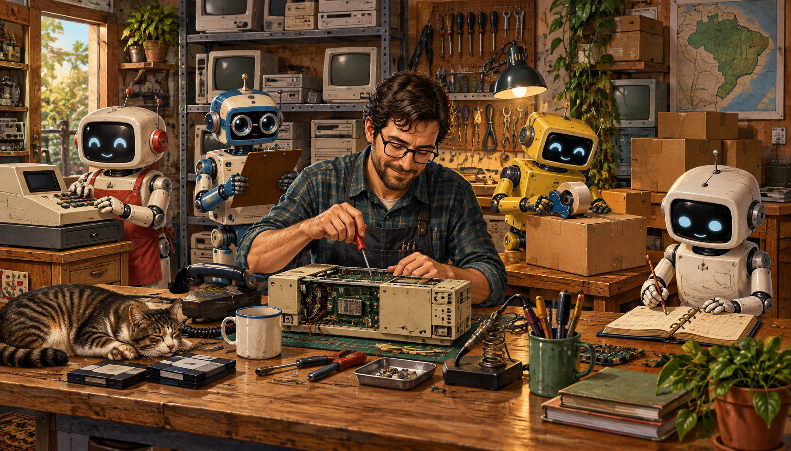

Os Quatro Trabalhões: uma oficina de IA com os pés no chão
Quatro ajudantes na bancada,
cada qual com sua tarefa marcada.
Mas antes de ligar a máquina e seguir,
alguém precisa conferir.
Uma bancada antiga, um problema atual
Quem já abriu um computador antigo conhece a cena: parafusos separados, peças sobre a mesa e uma boa dose de atenção para não trocar uma coisa pela outra. Na oficina de software, a inteligência artificial pode ajudar a pesquisar, escrever e testar. Mas, se receber tarefas demais ao mesmo tempo, também pode misturar assuntos, sugerir mudanças indevidas ou responder com uma confiança que não merece.
Para uma empresa pequena, o problema não é apenas técnico. Uma resposta errada pode consumir tempo de revisão, atrasar uma entrega ou levar a uma promessa que o produto ainda não cumpre. A solução começa antes de pedir mais velocidade: separar as tarefas e definir como cada resultado será conferido.
Quatro ajudantes, quatro assuntos
Vamos imaginar uma bancada com quatro ajudantes, apelidados de Os Quatro Trabalhões. Eles representam uma forma de organizar o trabalho em torno dos quatro produtos principais da Cara Core; são personagens desta história, não robôs físicos nem uma promessa de que trabalhem sozinhos.
- O ajudante do caixa: olha para as necessidades do PDV, onde a rotina da loja e o cuidado com os registros de venda precisam ser compreendidos antes de qualquer mudança.
- O ajudante da frota: acompanha os assuntos do CSO. O CSO Gestão de Frotas é um serviço online e depende de internet; não se deve confundir essa aplicação com uma ferramenta de rastreamento por GPS.
- O ajudante das encomendas: concentra-se no Hub e no trabalho dos pontos de retirada. Sua tarefa é respeitar as regras próprias dessa operação, sem carregar para ela as regras do caixa.
- O ajudante da agenda: pensa no Ink Agenda e na organização de horários e clientes de profissionais e estúdios.
Os nomes são uma metáfora para especialização. O que cada produto oferece depende da versão disponibilizada e deve ser conferido nas suas páginas próprias. Dividir o trabalho também não garante que uma sugestão esteja certa.
Pasta separada não é cerca de segurança
Em vez de entregar todos os arquivos a um único ajudante, a pessoa responsável pode indicar um projeto, uma tarefa e os documentos necessários. O Git, ferramenta que guarda o histórico das alterações, também permite usar worktrees: pastas de trabalho separadas para tarefas ou versões diferentes.
Essa separação ajuda na organização, mas não impede, por si só, que um programa acesse outros arquivos. Permissões adequadas, cuidado com dados sensíveis e revisão do que será compartilhado continuam necessários.
Há outra distinção importante: manter código e arquivos na própria máquina não prova que o serviço de inteligência artificial rode nela ou funcione sem internet. Algumas ferramentas enviam informações a um fornecedor remoto. Antes de usá-las, é preciso verificar a configuração, a conexão necessária e as regras de tratamento de dados.
A pessoa continua na bancada
Imagine uma empresa fictícia da região de Campo Largo que queira melhorar uma tela de agendamento. Em vez de pedir à IA para “arrumar o sistema inteiro”, a equipe descreve o problema daquela tela, indica os arquivos relevantes e combina o resultado esperado.
Depois, alguém examina as alterações, testa os casos importantes e confere se a solução respeita o uso real. Se a sugestão estiver errada, pode ser corrigida ou descartada. O exemplo ilustra um método de trabalho; não representa um cliente ou um resultado medido.
O que fazer amanhã
- Escolha uma tarefa pequena e descreva o problema que ela precisa resolver.
- Indique apenas os arquivos necessários e retire informações sensíveis que não precisam ser compartilhadas.
- Combine como a resposta será verificada: por exemplo, uma revisão das mudanças e um teste do caminho principal.
- Confira dependências, custos e necessidade de internet da ferramenta escolhida.
- Antes de colocar qualquer mudança em uso, revise o resultado e decida se ele está pronto.
A boa ferramenta, como o computador antigo bem cuidado, não elimina a necessidade de conhecer a máquina. Ela ajuda a trabalhar; quem responde pela entrega continua sendo a equipe.
Síntese: ajuda não é autonomia sem supervisão
Dividir tarefas pode reduzir a confusão. Pastas separadas ajudam a organizar, mas não substituem permissões, testes nem revisão humana. Trabalho local e IA offline são coisas diferentes.
De onde veio esta história
Esta adaptação para o Retrô parte do ensaio Os Quatro Trabalhões, de Christian Mulato, publicado no blog Personal em 17 de novembro de 2026. Aqui, a metáfora da oficina ganha uma leitura voltada à organização das tarefas e aos limites da automação.
Hashtags
Data editorial: 19 de novembro de 2026
© 2026 Cara Core Informática. Todos os direitos reservados.